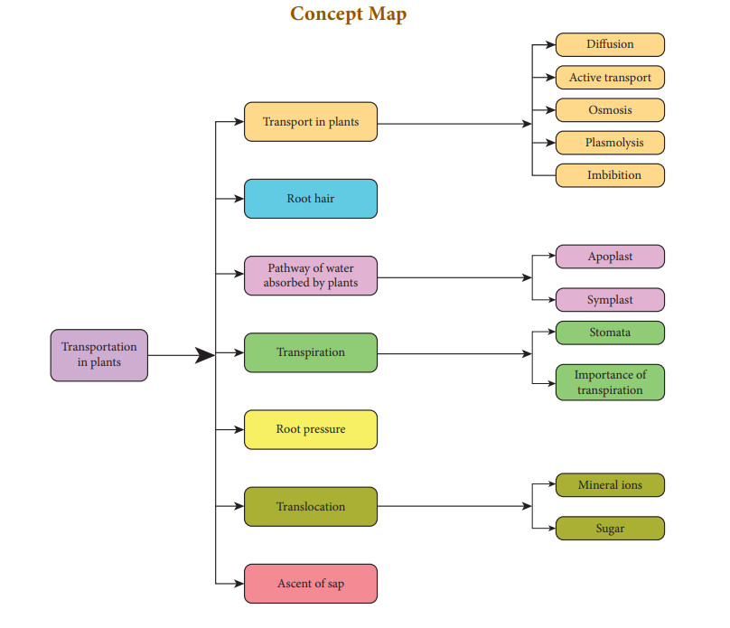
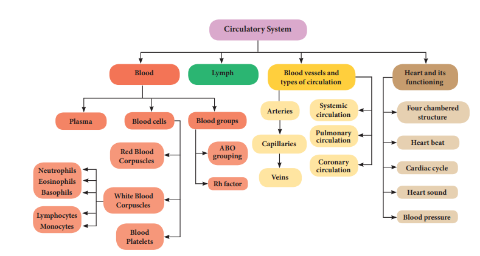

TEXTBOOK EVALUATION
1 Choose the correct answer
- Active transport involves
- movement of molecules from lower to higher concentration
- expenditure of energy
- it is an uphill task
- all of the above
- Water which is absorbed by roots is transported to aerial parts of the plant through
- Cortex
- Epidermis
- Phloem
- Xylem
- During transpiration there is loss of
- carbon dioxide
- oxygen
- water
- none of the above
- Root hairs are
- cortical cell
- projection of epidermal cell
- unicellular
- both b and c
- which of the following process requires energy?
- active transport
- diffusion
- osmosis
- all of them
- The wall of human heart is made of
- Endocardium
- Epicardium
- Myocardium
- All of the above
- Which is the sequence of correct blood flow
- ventricle to atrium, atrium to vein, vein to arteries
- atrium to ventricle, ventricle to veins, veins to arteries
- atrium to ventricle, ventricle to arteries, arteries to vein
- ventricles to vein, vein to atrium, atrium to arteries
- A patient with blood group O was injured in an accident and has blood loss. Which group of blood should be used by the doctor for transfusion
- O group
- A B groups
- A or B group
- all blood groups
- ‘Heart of heart’ is called
- SA node
- AV node
- Purkinje fibres
- Bundle of His
- Which one of the following shows correct compositions of blood
- Plasma – (Blood + Lymphocyte)
- Serum – (Blood + Fibrinogen)
- Lymph (Plasma + RBC + WBC)
- Blood - (Plasma + RBC+ WBC +Platelets)
2
Fill in the blanks
- Dash involves evaporative loss of water from aerial parts.
- Water enters the root cell through a dash membrane.
- Structures in roots that help to absorb water from the soil is dash.
- Normal blood pressure is dash.
- The normal human heartbeat rate is about dash time per minute.
3
Match the following
Section 1
1 Symplastic pathway - Leaf
2 Transpiration - Plasmodesmata
3 Osmosis - Pressure in xylem
4Root Pressure - Pressure gradient
Section II
1 Leukaemia - Thrombocytes
2 Platelets - Phagocyte
3 Monocytes - Decrease in leucocytes
4 Leukopenia - Blood Cancer
5 A B blood group - Allergic condition
6 O blood group - Inflammation
7 Eosinophil - Absence of antigen
8 Neutrophils - Absence of antibody
4
State whether True or False. If false, write the correct statement
- The phloem is responsible for the translocation of food.
- Plants lose water by the process of transpiration.
- The form of sugar transported through the phloem is glucose.
- In apo plastic movement the water travels through the cell membrane and enter the cell.
- When guard cells lose water, the stoma opens.
- Initiation and stimulation of heartbeat take place by nerves.
- All veins carry deoxygenated blood.
- WBC defend the body from bacterial and viral infections.
- The closure of the mitral and tricuspid valves at the start of the ventricular systole produces the first sound ‘LUBB’.
5.
Answer in a word or sentence
- Name two layered protective covering of human heart.
- What is the shape of RBC in human blood?
- Why is the colour of the blood red?
- Which kind of cells are found in the lymph?
- Name the heart valve associated with the major arteries leaving the ventricles.
- Mention the artery which supplies blood to the heart muscle.
6
Short answer questions
1) What causes the opening and closing of guard cells of stomata during transpiration?
2) What is cohesion?
3) Trace the pathway followed by water molecules from the time it enters a plant root to the time it escapes into the atmosphere from a leaf.
4) What would happen to the leaves of a plant that transpires more water than its absorption in the roots?
5) Describe the structure and working of the human heart.
6) Why is the circulation in man referred to as double circulation?
7) What are heart sounds? How are they produced?
8) What is the importance of valves in the heart?
9) Who discovered Rh factor? Why was it named so?
10) How are arteries and veins structurally different from one another?
11) Why is the Sinoatrial node called the pacemaker of heart?
12) Differentiate between systemic circulation and pulmonary circulation.
13) The complete events of cardiac cycle last for 0.8 sec. What is the timing for each event?
7
Give reasons for the following statements
1) Minerals cannot be passively absorbed by the roots.
2) Guard cells are responsible for opening and closing of stomata.
3) The movement of substances in the phloem can be in any direction.
4) Minerals in the plants are not lost when the leaf falls.
5) The walls of the right ventricle are thicker than the right auricles.
6) Mature RBC in mammals do not have cell organelles.
8
Long answer questions
1) How do plants absorb water? Explain.
2) What is transpiration? Give the importance of transpiration.
3) Why are leucocytes classified as granulocytes and agranulocytes? Name each cell and mention its functions.
4) Differentiate between systole and diastole. Explain the conduction of heartbeat.
5) Enumerate the functions of blood.
9 Assertion and Reasoning
Direction: In each of the following questions a statement of assertion (A) is given, and a corresponding statement of reason (R) is given just below it. Mark the correct statement as.
a). If both A and R are true and R is correct explanation of A
b). If both A and R are true but R is not the correct explanation of A
c). A is true, but R is false
d). Both A and R are false
1). Assertion: RBC plays an important role in the transport of respiratory gases.
Reason: RBC do not have cell organelles and nucleus.
2). Assertion: Persons with A B blood group are called a universal recipient because they can receive blood from all groups.
Reason: Antibodies are absent in persons with A B blood group.
10.
Higher Order Thinking Skills (HOTS)
1) When any dry plant material is kept in water, they swell up. Name and define the phenomenon involved in this change.
2) Why are the walls of the left ventricle thicker than the other chambers of the heart?
3) Doctors use stethoscope to hear the sound of the heart. Why?
4) How does the pulmonary artery and pulmonary vein differ in their function when compared to a normal artery and vein?
5) Transpiration is a necessary evil in plants. Explain.
REFERENCE BOOKS
1. V.K. Jain, Fundamentals of Plant physiology, S.Chand and Company, New Delhi
2. D.G Maclean and Dave Hayward, Biology Cambridge IGCSE
3. S.C.Rastogi., Essential of Animal Physiology, 4th Edition, New Age International Publishers
4. Elain N. Marieb and Katja Hoehn, 2011, Anatomy and Physiology, 4th Edition, Pearson Publications.
INTERNET RESOURCES
http://www.britannica.com/science/humancirculatory-system
http://biologydictionary.net/circulatorysystem/

